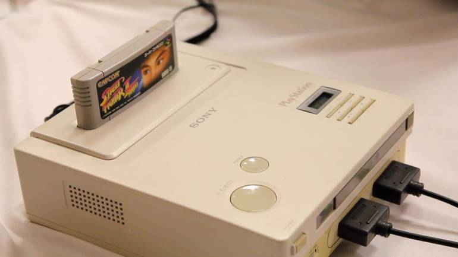
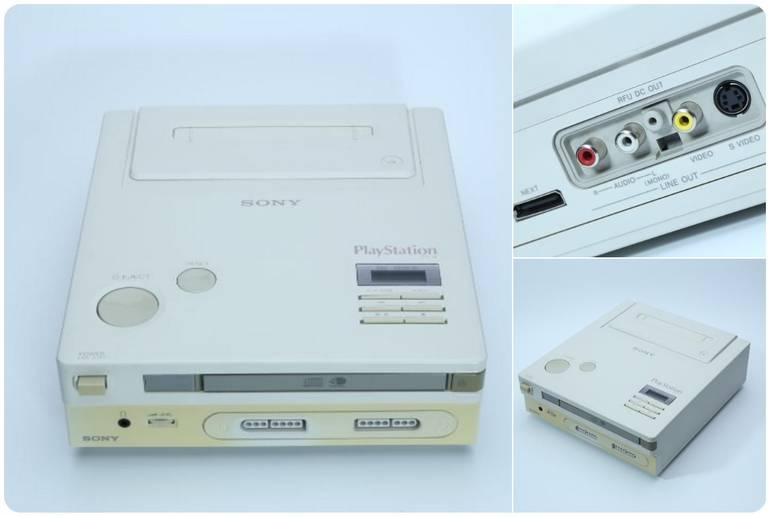
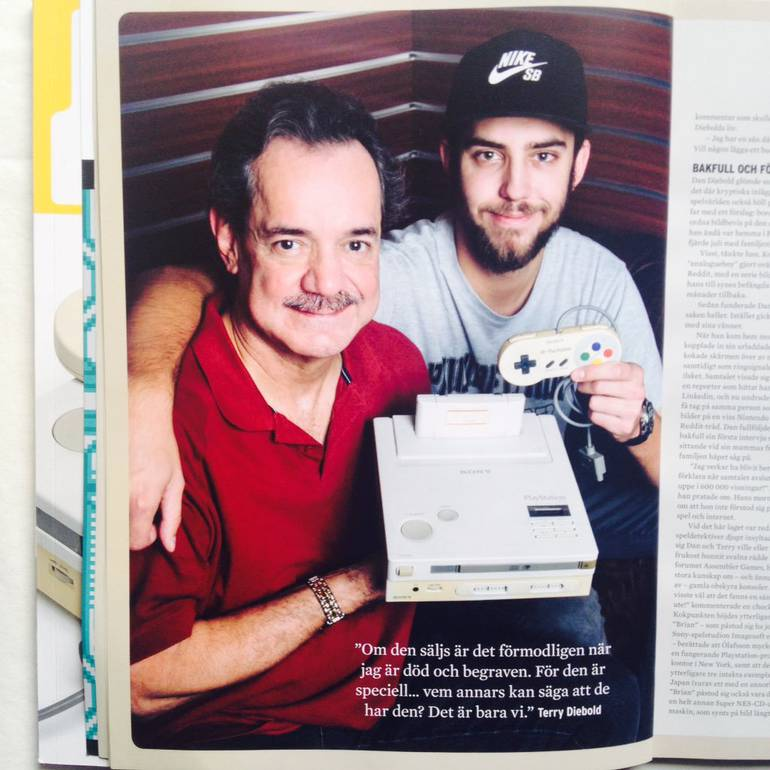

Hoje em dia isso pode parecer um tanto improvável - especialmente para quem só está conheceu a indústria de games de 1994 para frente -, mas em um passado não muito distante a Sony e a Nintendo já foram grandes parceiras, trabalhando juntas em alguns momentos durante os anos 1980 e no início da década de 1990. Em certo momento, esta união parecia que ia render frutos signifcativos com um novo console da Big N. No fim, porém, a Sony seguiu seu próprio caminho - e mudou os rumos da indústria para sempre. Contudo, vamos do começo. A primeira parceria ocorreu quando Ken Kutaragi (que mais tarde se tornou o "Pai do PlayStation") projetou o chip de som do Super Nintendo (SNES), o SPC-700, no final de 1980. A fim de repetir o sucesso, mais tarde, a Sony começou a desenvolver um periférico de leitor de CD para o Super Nintendo. Intitulado SNES-CD (abreviação de Super Nintendo CD-ROM System), o periférico parecia bastante promissor, já que nos anos 1980 as mídias não chegavam nem perto da capacidade de hoje em dia e os cartuchos de 48Mbit (6MB) dominavam o mercado. Então, um novo formato que poderia chegar até 700 MB, como o Compact Disk (CD) produzido pela Sony, parecia algo revolucionário. A Nintendo se interessou por essa mídia, a fim de continuar liderando o mercado, afinal, naquela época a empresa era a maior da indústria. Juntas, as duas marcas poderiam peitar o PC Engine da NEC e o Mega CD da Sega. A Sony, por sua vez, dominava o setor de eletrônicos e, claro, gostaria de entrar no mercado de consoles também. Até então, a companhia tinha apoiado os computadores MSX e lançado a marca Sony ImageSoft, que não fizeram muito barulho e, por tabela, não alcançaram a meta de lucro desejado.
A parceria com a Nintendo parecia ser a melhor opção para a Sony e assim que o SNES foi lançado no final de 1990 no Japão, as revistas de videogame começaram a noticiar uma parceria promissora entre as companhias. Todavia, a Sony e a Nintendo não se entenderam muito bem: nenhum dos dois lados queria ceder o bastante e desejavam abocanhar uma parcela maior de direitos sobre licenciamento da mídia física, o CD. Inicialmente, além de fornecer a mídia em CD, a Sony também fabricaria o periférico de CD-ROM que seria acoplado ao SNES - tal qual acontecia entre o Mega CD e o Mega Drive da Sega. Com isso, a gigante de eletrônicos ficaria com as taxas de licenciamento do periférico e também dos CDs. Outra cláusula do contrato, também permitiria que a Sony desenvolvesse um console independente, o SNES PlayStation (ou ainda Nintendo PlayStation), que rodaria não apenas os jogos em CD como também os cartuchos do SNES. Esses termos não agradaram a Nintendo, afinal, as taxas de licenciamento dos cartuchos dos consoles geravam uma receita altíssima para a Big N. Perder essa fatia da torta sobre os novíssimos CDs e ceder os cartuchos para um novíssimo console produzido pela Sony - que ainda estava engatinhando para crescer e aparecer no mercado de videogames - parecia um ultraje.
Com isso, a Big N tentou uma aproximação com a Philips, concorrente direta da Sony na época. A fabricante japonesa negociou secretamente com a empresa holandesa para que ela produzisse um periférico de CD-ROM diferente do que a Sony estava planejando. Sem desconfiar, a gigante de eletrônicos prosseguiu com os planos e apresentou para a imprensa, durante a Consumer Electronics Show (CES) de 1991, o protótipo do projeto de CD-ROM que havia desenvolvido para o SNES, além do Nintendo PlayStation. Dias depois, Hiroshi Yamauchi, presidente da Nintendo, anunciou ao público que havia assinado um contrato com a Philips para produzir o periférico; deixando a Sony a ver navios. A Sony e a Nintendo ainda tentaram negociar e levar o projeto adiante, uma vez que o protótipo do Nintendo PlayStation realmente saiu do papel e, ao que tudo indicava, iria se tornar realidade. Porém, em 1992, a parceria se desfez de vez, fomentada por boatos de que a Nintendo poderia estar apenas comprando tempo para impedir que a Sony se consolidasse no mercado, enquanto prosseguia com a parceria com a Philips por debaixo dos panos. O acordo entre Nintendo e Philips também foi descontinuado, mas, nesse processo, a fabricante conseguiu licenciamento para usar algumas das propriedades da Big N em seu CDi - e foi assim que nasceram as famigeradas pérolas Link: The Faces of Evil, Zelda: The Wand of Gamelon e Hotel Mario.
Com o fracasso das parcerias entre as empresas; anos depois, a Sony lançou o PlayStation no final de 1994, dando o pontapé inicial para uma marca que ainda hoje gera bastante lucro para a gigante de eletrônicos. Já a Nintendo seguiu com o SNES e posteriormente lançou o Nintendo 64 em 1996. Mas, e aquele protótipo do Nintendo PlayStation, que fim levou? O raríssimo console foi encontrado em um sótão no final dos anos 2010 por Terry Diebold. Na época, quando o videogame apareceu na internet, o público automaticamente achou que se tratava de algo falso, uma invenção de fãs. Porém, o console foi testado até mesmo pela imprensa norte-americana e realmente roda CDs e cartuchos de SNES. Atualmente, o tutor do Nintendo PlayStation está exibindo o videogame para potenciais compradores ao redor do mundo. Dada a sua raridade e contexto histórico, o preço desse protótipo está atualmente cotado em US$ 3 milhões, o que daria aproximadamente R$ 13 milhões na conversão do dia - sem acréscimo de impostos. Mas o martelo ainda não foi batido e o Nintendo PlayStation ainda não foi vendido. Quanto à Nintendo e a Sony, ambas prosseguem no mercado de videogames, com presidentes diferentes e, por tabela, com abordagens e visões distintas uma da outra. Recentemente, a Big N fez parcerias com a Microsoft e seu Xbox Series, que compete diretamente com o PlayStation 5 atualmente.
